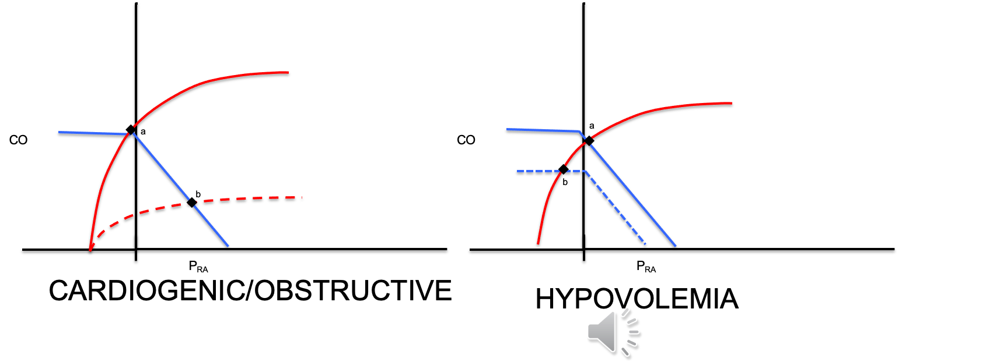
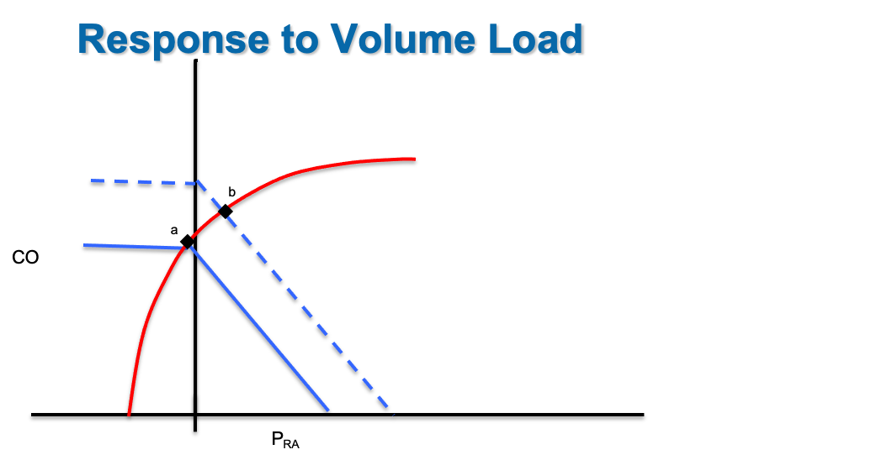

Module N8
Put it together
Everything so far, the definition of shock, oxygen delivery, the bedside read, the curves, the grid, and the catheter, comes together on one patient. Let's return to our patient from module 6. A 79-year-old woman with a medical history of atrial fibrillation and coronary artery disease arrives with abdominal pain and nausea. Her history includes atrial fibrillation and coronary disease, and she takes warfarin and metoprolol. Her heart rate is 120, her pressure is 75/45 mmHg with a MAP of 65 mmHg, her respiratory rate is 18/min, and her temperature is 35.1 degrees F. Her lungs are clear and her abdomen is soft but tender in the right lower quadrant. The point of walking through this case is not the diagnosis at the end. It is to notice, consciously, how we think about the hemodynamics and the process that gets us there.
Revisiting the A.C.T. methodology
In Module 6, we discussed how the A.C.T. methodology prevents reflexive, and potentially erroneous decisions based on flawed assumptions about the cause of shock or effect of a therapy. Let's review the components of the A.C.T. algorithm again.
Assess
In Module 6, our patient had signs of shock. The B.U.S. screen suggested some alterations to her mental status and urine output. In addition, she is tachycardic, and her MAP is unreassuring. Shock is present, and the etiology is not obvious. That is precisely the situation the advanced hemodynamic evaluation is built for, so we move on to a hypothesis rather than reaching reflexively for fluids.
Create a hypothesis
Our patient is elderly, has a history of coronary disease, and possibly is infected. Our initial hypothesis was distributive shock from sepsis, a reasonable first guess. Before ordering anything, we predicted what the physiology of distributive shock should look like. Venous capacitance rises as small veins actively dilate, so stressed volume shifts to unstressed and the venous-return curve slides left, dropping CO at first. Dilation of the large veins with shunting into low-resistance beds lowers venous resistance and shifts the slope of the venous return curve up. The subsequent catecholamine response lifts the cardiac-function curve up and to the left. The physiologic prediction is a low filling pressure with a preserved or high cardiac output.

In Module 6, we compared our physiologic prediction to the shock-type grid and selected a single parameter that would help us confirm distributive shock and refute other shock etiologies. Because cardiac output separates distributive shock from every other etiology, we chose this parameter to measure.
| Shock type | MAP | CO | RAP | PAPm | LAP | SVR |
|---|---|---|---|---|---|---|
| Cardiac (LV) | ↓ | ↓ | ↑ | ↔/↑ | ↑ | ↑ |
| Obstructive (RV) | ↓ | ↓ | ↑ | ↑ | ↔ | ↑ |
| Distributive | ↓ | ↔/↑ | ↓ | ↔ | ↔ | ↓ |
| Hypovolemic | ↓ | ↓ | ↓ | ↔ | ↔ | ↑ |
Remember that the process is not novel, but the habit is the point: let the cardiac function and venous return curves tell you what you presume will happen, then pick the one parameter whose value would prove or break that presumption.
Test
In the case of our 79 year-old patient, bedside echo provides an easy, noninvasive method for assessing cardiac output by velocity-time integral (VTI) method. In addition, assessment of chamber size and function can provide additional confirmation to support the VTI calculation. In our patient echo suggests the ventricles look grossly normal in size, but the left ventricle is hyperdynamic. The VTI suggests a low stroke volume and the cardiac output is calculated at 4 L/min. While a hyperdynamic left ventricle can be seen in patients with distributive shock, the low cardiac output does not fit our hypothesis. Distributive shock predicted a preserved or elevated output, and hers is lower than expected. The test refuted the guess, which is a success, not a failure, because it converts a guess into data.
Reassess: the loop turns
You are never done after one pass. You move back and reassess. New information arrives: the family reports recent falls at home, and she is anticoagulated on warfarin. A low output now points away from distributive shock and toward either a failing pump, obstructive, or hypovolemic shock. All of those give a low cardiac output, so flow can no longer separate them. What splits them is the right atrial pressure: pump failure backs blood up and raises RAP, while hypovolemia drains the reservoir and lowers it.

How far to trust the right atrial pressure
Before we measure it, be honest about what the number can and cannot do, because this is where people get into trouble. Ask first what your goal is: to determine the current RAP, or to predict volume responsiveness. For etiology, RAP is genuinely useful, a high filling pressure fits a failing pump and a low one fits an empty tank. As a rule of thumb, a RAP above 10 mmHg reads as high and suggestive of cardiogenic shock. A RAP below 5 mmHg is normal or low and is more suggestive of hypovolemic or distributive shock. There is a caveat that PEEP, obesity, pulmonary hypertension, elevated intra-abdominal pressure all influence the number.
For volume responsiveness, the number is far weaker, and the asymmetry matters. A high RAP often, but not always suggests the ventricle is near the flat portion of its cardiac function curve and is unlikely to reward more volume with discernable improvements in CO. A low RAP tells you almost nothing, because you cannot see where the flat portion of that patient's venous-return curve begins. We investigate the physiology behind this and review alternative tools to measure volume responsiveness in Module 11 of the Informed Learner Pathway.
From diagnosis to therapy
Our echo assessment suggests a narrow, collapsible IVC and the central venous catheter in the internal jugular vein reads a CVP of 1 mmHg. In addition, our patient's hemoglobin returns at 5.5 g/dL, down from 9 g/dL a month ago. Low atrial filling pressure, low cardiac output, and a drop in hemoglobin: this is hemorrhagic, hypovolemic shock.
It is vital to recognize that the A.C.T. loop does not stop at the diagnosis. The same discipline governs treatment. The instinct is to give blood and fluid, but that casual step makes an implicit assumption about how our patient will respond. Take a moment to run the A.C.T. loop once more on the intervention too. In our patient, our echo data suggests her cardiac-function curve is normal, so the hypothesis is that transfusion slides the venous-return curve up and to the right, raising the filling pressure and the output together.

In our patient, increasing both cardiac output and restoring hemoglobin directly impacts DO2 delivery in a positive manner:
Finally, we test our hypothesis. Watch the MAP, the RAP, and the cardiac output move after the volume challenge rather than assuming things have improved. Confirm this with reassessment of lactate, capillary refill, and Pa-vCO2 gap.
Assess, create a hypothesis on the curves, test with one measurement, then reassess and let the answer restart the loop: that is the entire method, and it is HemoSim applied at the bedside.
References
- Magder S, Bafaqeeh F. The clinical role of central venous pressure measurements. J Intensive Care Med. 2007;22(1):44-51.
- Funk DJ, Jacobsohn E, Kumar A. The role of venous return in critical illness and shock. Crit Care Med. 2013;41(1):255-262.
- Rivers E, Nguyen B, Havstad S, et al. Early goal-directed therapy in the treatment of severe sepsis and septic shock. N Engl J Med. 2001;345(19):1368-1377.
- Comparison of thermodilution and Fick cardiac output in critically ill patients. Am J Respir Crit Care Med. 1999;160(2):535-541.
- Sylvester JT, Goldberg HS, Permutt S. The role of the vasculature in the regulation of cardiac output. Clin Chest Med. 1983;4(2):111-126.
- Rola P, Kattan E, Siuba MT, et al. A Holistic Four-Interface Conceptual Model for Personalizing Shock Resuscitation. J Pers Med. 2025;15(5):207.